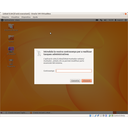
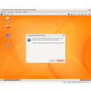
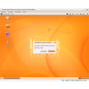
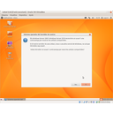
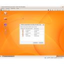
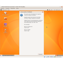
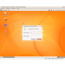
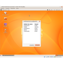
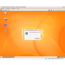
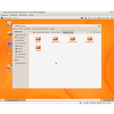

Pràctica 6. Configuració de les unitats de xarxa
Un cop ja tenim els paquets instal·lats podem passar a fer la configuració, per fer-la, hem de saber algunes dades:
- La IP del servidor 192.168.1.100
- Si és un servidor windows, un usuari i la seva contrasenya, que pugui accedir a les unitats compartides, l'administrador.
- Alguns usuaris que tinguin accés a les unitats que volem configurar ( Programari, treball, professorat, gestió, multimèdia.
Amb aquestes dades ja podem començar la configuració.
Configuració de les unitats.
Posarem en funcionament el programa de configuració i seguirem les seves indicacions.
Pas 1. Aplicacions -> Eines del sistema -> Linkat muntador
Pas 2. Contrasenya administrador.
Pas 3. Confirmar que volem fer la configuració.
Pas 4. Posar la IP del servidor 192.168.1.100
Pas 5. Si és un servidor windows, haurem de posar un usuari i la seva contrasenya, que tingui accés a les unitats. En el nostre cas no cal, és un servidor Linux.
Pas 6. Ens ensenya les unitats compartides.
Pas 7. Ens demanarà un usuari i una contrasenya per cada unitat compartida, per exemple: Programari - profe, Treball - alumne, Professorat - profe, Gestio - gestio, multimedia - profe. Aquests usuaris han d'existir al servidor.
Pas 8. Confirmar que volem aplicar els canvis i finalitzar.
Pas 9. Reiniciar l'ordinador
Pas 10. Entrar amb un usuari, i ja tenim l'accés a l'escriptori per les unitats de xarxa, i accés tant sols a les que tinguem permisos.
Galeria d'imatges
 Pas 1. Aplicacions -> Einses del sistema -> Linkat muntador
Pas 1. Aplicacions -> Einses del sistema -> Linkat muntador
Pas 2. Contrasenya administrador.
Pas 3. Confirmar que volem fer la configuració.
Pas 4. Posar la IP del servidor 192.168.1.100
Pas 5. si és un servidor windows, haurem de posar un usuari i la seva contrasenya,
Pas 6. ens ensenya les unitats compartides
Pas 7. Ens demanarà un usuari i una contrasenya per cada unitat compartida
Pas 7. Ens demanarà un usuari i una contrasenya per cada unitat compartida
Pas 8. confirmar que vlem aplicar els canvis i finalitzar.
Finalització- Esperem reninicar lordinador
- Triem l'usuari amb que volem entrar

accés a les unitats des de l'escriptori.


Llicenciat sota la Llicència Creative Commons Reconeixement NoComercial CompartirIgual 4.0